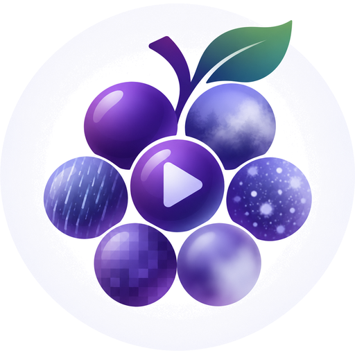

Finding 1
Model rankings can reverse across synthetic and real-world conditions, and overall accuracy can conceal distinct strengths across difficulty levels.
minus
and
When Vision Degrades, Does Video Reasoning Hold?

GRAPE-BenchA tiered benchmark for video reasoning under visual degradation, synthetic and real.
Ce Zhang1*, Junyi He1*, Tianshi Ming1*, Jinxi He1, Jianshu Zhang2, Xiyuan Yang3,
Jianuo Zhu1, Yicheng Tao1, Xiyu Luo1, Minghao Fu4, Jiahui Zhu5, Kehan Guo6,
Yunzhong Xiao1, Jingyang Lin7, Wei Chow8, Lingdong Kong8, Katia Sycara1, Yaqi Xie3
 2
2 3
3 45
45 67
67 8
8Both sets are released on Hugging Face, with the videos and the L1–L3 questions.
# command line (Hugging Face CLI)
hf download grape-lab/GRAPE-Bench-Realworld --repo-type dataset --local-dir GRAPE-Bench-Realworld
hf download grape-lab/GRAPE-Bench-Synthetic --repo-type dataset --local-dir GRAPE-Bench-Synthetic
# or from Python
from huggingface_hub import snapshot_download
snapshot_download("grape-lab/GRAPE-Bench-Realworld", repo_type="dataset", local_dir="GRAPE-Bench-Realworld")The videos derive from third-party datasets, whose terms apply; see the dataset cards.
Multiple-choice accuracy (%), every question weighted equally. 23 open-weight models on both sets; Kimi K3 and six proprietary configurations additionally on the real-world set.
The synthetic set applies twelve corruption types to daily-life and driving videos. The real-world set uses driving footage recorded in rain, snow and fog, and at night. Some models that lead under a simulated condition fall behind the same peers under the natural one.
Each video carries three independently answerable questions of increasing reasoning demand. L1 asks for fundamental judgments that can matter for safe driving; L3 is a reasoning stress test. Overall accuracy can hide a weakness at L1.
Fine-tuning Qwen3.5-9B on the synthetic set raises its real-world accuracy from 76.7% to 81.1%. With the model frozen, a learned steering vector shifts accuracy between L1 and L3 with little change overall.
Robustness benchmarks usually perturb video with controlled, simulated corruptions, and video benchmarks usually probe models with hard questions. Two observations on driving video show what each of these leaves open.
Accuracy (%) over L1–L3 on a synthetic driving condition and on the corresponding real-world condition. The two sets use different scenes and questions. Hover a model to trace it, click to pin it, and switch models on and off.

Left: the scene of the paper's first figure; share of models that answer wrongly and safety relevance of each question. Right: safety-relevance ratings (0–100, an auxiliary rating by Claude Opus 5.5) of all 1,716 real-world questions; the vertical mark is the mean. Hover the bars. L1 is rated above L3 in 408 of the 572 video groups (71.3%).
A sample of the 572 real-world video groups, chosen for strong visible degradation; the corruption is natural, not synthesized. Each video has one question per level; click a question to see its options and the reference answer.
GRAPE-Bench (Graded Robustness Assessment under Perturbed Environments) is multiple-choice question answering on visually degraded video. Every video carries three questions, answered independently.
A coarse entity or event. Often the judgment a driving decision rests on.
A focused property, state, action or relation.
Integrates the relevant facts with additional visual evidence.
Each corrupted video is paired with its clean counterpart; questions, options and answers are identical for both.
Footage recorded under naturally adverse conditions, with questions written and finalized by annotators.
Outer ring: source datasets. Inner ring: corruption types (synthetic) or recording conditions (real-world). Hover or click a segment or a legend entry to see how it is composed.
One video of the released synthetic set per corruption, at the benchmark's severity. Numbers: mean accuracy of the 23 open-weight models on clean and on corrupted video, same questions. Hover a tile for the change at each level.
Eight of the 572 real-world videos with their three questions; the reference answer is marked. Clips are shown at the 5 fps used for evaluation.
Four findings from the paper. Every chart below can be explored.
Every one of the 23 models loses 7.8 to 11.4 points against clean video. Hover a model.
Gain over the unadapted Qwen3.5-9B, in points. Training uses 30,924 synthetic questions; the real-world set is used only for testing. Fitting harder is not better: two epochs at a learning rate of 3e-4 raise synthetic validation accuracy from 85.7% to 87.4% but lower real-world accuracy from 77.8% to 75.0%.
Qwen3.5-9B stays frozen; two 4,096-dimensional vectors (8,192 parameters) are added at decoder layer 12 of 32. λ = 0 still applies the shared vector and is not the unsteered model. Drag the slider.
@article{zhang2026grapebench,
title = {GRAPE-Bench: When Vision Degrades, Does Video Reasoning Hold?},
author = {Zhang, Ce and He, Junyi and Ming, Tianshi and He, Jinxi and Zhang, Jianshu and Yang, Xiyuan and Zhu, Jianuo and Tao, Yicheng and Luo, Xiyu and Fu, Minghao and Zhu, Jiahui and Guo, Kehan and Xiao, Yunzhong and Lin, Jingyang and Chow, Wei and Kong, Lingdong and Sycara, Katia and Xie, Yaqi},
year = {2026}
}The benchmark builds on VRU-Accident, Video-MME, STAR, NExT-QA, EgoSchema, DrivingDojo, Boreas, Boreas-RT, BDD100K, DrivingHazy and GoProHazy.